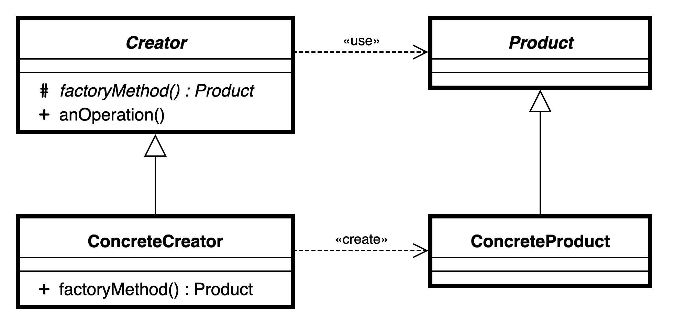
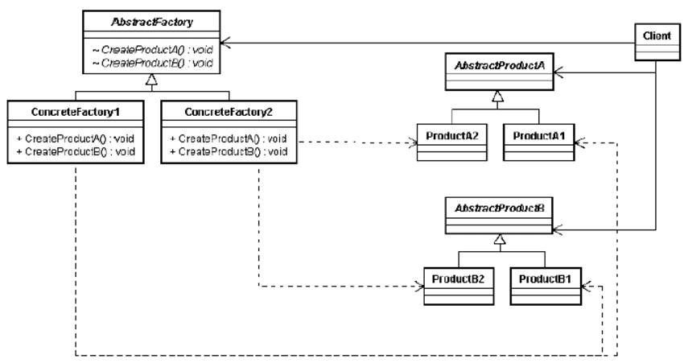
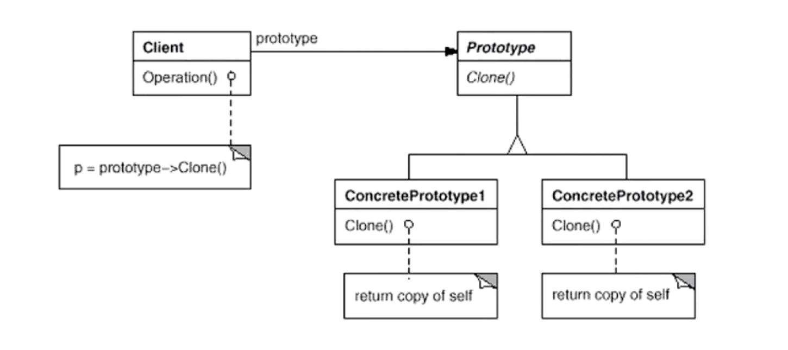
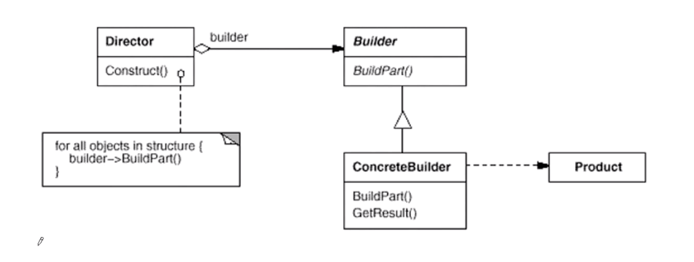

“对象创建类”设计模式（C++）
通过“对象创建”模式绕开 new，来避免对象创建（new）过程中所导致的紧耦合（依赖具体类），从而支持对象创建的稳定。它是接口抽象之后的第一步工作。
工厂方法（Factory Method）
在软件系统中，经常面临着创建对象的工作；由于需求的变化，需要创建的对象的具体类型经常变化。如何应对这种变化？如何绕过常规的对象创建方法，提供一种“封装机制”来避免客户程序和这种“具体对象创建工作”的紧耦合？

模式定义：定义一个用于创建对象的接口，让子类决定实例化哪一个类。工厂模式使得一个类的实例化延迟（目的：解耦，手段：虚函数）到子类。
struct Strategy {
~Strategy() {}
virtual void strategy() = 0;
};
struct StrategyFactory {
~StrategyFactory() {}
virtual std::shared_ptr<Strategy> createStrategy() = 0;
};
struct StrategyA : public Strategy {
void strategy() {
std::cout << "[StrategyA]" << std::endl;
};
};
struct StrategyFactoryA : public StrategyFactory {
std::shared_ptr<Strategy> createStrategy() {
return std::make_shared<StrategyA>();
};
};
class Application { // 策略模式 + 工厂模式；
std::shared_ptr<StrategyFactory> strategyFactory;
std::shared_ptr<Strategy> strategy;
public:
Application(std::shared_ptr<StrategyFactory> strategyFactory) :
strategyFactory(strategyFactory),
strategy(strategyFactory->createStrategy()) {}
void run() {
strategy->strategy();
std::cout << "[Application]" << std::endl;
}
};
int main(int argc, char** argv) {
auto strategyFactoryA = std::make_shared<StrategyFactoryA>();
Application app(strategyFactoryA);
app.run();
return 0;
}
总结：
- 工厂模式用于隔离类对象的使用者和具体类型之间的耦合关系。面对一个经常变化的具体类型，紧耦合关系（new）会导致软件的脆弱；
- 工厂模式通过 OOP，将所要创建的具体对象工作延迟到子类，从而实现一种扩展（而非更改）的策略，较好地解决了这种紧耦合关系；
- 工厂模式解决“单个对象”的需求变化。缺点在于要求创建方法/参数相同；
总的来看，思路还是将静态的部分（具体的工厂、策略以及需要用到哪些）留给用户代码去决定。其余都用动态代码组成。
* 知乎上的一个回答：工厂模式（factory Method）的本质是什么？为什么引入工厂模式？
抽象工厂模式（Abstract Factory）
在软件系统中，经常面临着“一系列相互依赖的对象”的创建工作；同时，由于需求变化，往往存在更多系列对象的创建工作。如何应对这种变化？如何绕过常规的对象创建方法，提供一种“封装机制”来避免客户端程序和这种“多系列具体对象创建工作”的紧耦合？

模式定义：提供一个接口，让该接口负责创建一系列“相关或者相互依赖的对象”，无需指定它们具体的类。
struct StrategyInit { // 稳定；
~StrategyInit() {}
virtual void strategyInit() = 0;
};
struct StrategyFinish { // 稳定；
~StrategyFinish() {}
virtual void strategyFinish() = 0;
};
struct StrategyFactory { // 稳定；一簇相互依赖的对象（StrategyInit，StrategyFinish）；
~StrategyFactory() {}
virtual std::shared_ptr<StrategyInit> createStrategyInit() = 0;
virtual std::shared_ptr<StrategyFinish> createStrategyFinish() = 0;
};
struct StrategyInitA : public StrategyInit {
void strategyInit() {
std::cout << "[StrategyInit A]" << std::endl;
};
};
struct StrategyFinishA : public StrategyFinish {
void strategyFinish() {
std::cout << "[StrategyFinish A]" << std::endl;
};
};
struct StrategyFactoryA : public StrategyFactory {
std::shared_ptr<StrategyInit> createStrategyInit() {
return std::make_shared<StrategyInitA>();
};
std::shared_ptr<StrategyFinish> createStrategyFinish() {
return std::make_shared<StrategyFinishA>();
};
};
class Application { // 策略模式 + 抽象工厂模式；
std::shared_ptr<StrategyFactory> strategyFactory;
public:
Application(std::shared_ptr<StrategyFactory> strategyFactory) :
strategyFactory(strategyFactory) {}
void run() {
strategyFactory->createStrategyInit()->strategyInit();
strategyFactory->createStrategyFinish()->strategyFinish();
std::cout << "[Application]" << std::endl;
}
};
int main(int argc, char** argv) {
auto strategyFactoryA = std::make_shared<StrategyFactoryA>();
Application app(strategyFactoryA);
app.run();
return 0;
}
总结：
- 如果没有应对“多系列对象构建”的需求变化，则没有必要使用该模式，这时候使用简单的工厂模式即可以；
- “系列对象”指的是在某一特定系列下的对象之间有相互依赖、或作用的关系。不同系列的对象之间不能相互依赖；
- 抽象工厂模式主要在于应对“新系列”的需求变动。其缺点在于难以应对“新对象”的需求变动。
原型模式（Prototype）
在软件系统中，经常面临着“某些结构复杂的对象”（即无法通过工厂模式简单创建的）的创建工作；由于需求的变化，这些对象经常面临着剧烈的变化，但是它们却拥有比较稳定一致的接口。如何应对这种变化？如何向“客户程序（使用这些对象的程序）”隔离出“这些易变对象”，从而使得“依赖这些易变对象的客户程序”不随着需求改变而改变？

模式定义：
struct Strategy {
~Strategy() {}
virtual void strategy() = 0;
virtual std::shared_ptr<Strategy> clone() = 0; // 通过克隆自己创建对象；
};
struct StrategyA : public Strategy {
std::shared_ptr<Strategy> clone() {
return std::make_shared<StrategyA>(*this); // 通过 copy-constructor 拷贝自己；
}
void strategy() {
std::cout << "[Strategy A]" << std::endl;
}
};
class Application {
std::shared_ptr<Strategy> prototype; // 使用原型来创建新对象；
public:
Application(std::shared_ptr<Strategy> prototype) : prototype(prototype) {}
void run() {
prototype->clone()->strategy(); // 创建新对象并调用方法；
std::cout << "[Application]" << std::endl;
}
};
int main(int argc, char** argv) {
auto strategyA = std::make_shared<StrategyA>();
Application app(strategyA);
app.run();
return 0;
}
总结：
- 原型模式同样用于隔离类对象的使用者和具体类型（易变类）之间的耦合关系，它同样要求这些“易变类”拥有“稳定的接口”；
- 原型模式对于“如何创建易变类的实体对象”采用“原型克隆”的方式，它使得我们可以非常灵活地动态创建“拥有某些稳定接口”的新对象 —— 所需工作仅仅是注册一个新类的对象（即原型），然后再任何需要的地方 Clone；
- 原型模式中的 Clone 方法可以利用某些框架中的序列化来实现深拷贝；
构建器模式（Builder）
在软件系统中，有时候面临着“一个复杂对象”的创建工作，其通常由各个部分的子对象用一定的算法构成；由于需求的变化，这个复杂对象的各个部分经常面临着剧烈的变化，但是将它们组合在一起的算法却相对稳定。如何应对这种变化？如何提供一种“封装机制”来隔离出“复杂对象的各个部分”的变化？从而保持系统中的“稳定构建算法”不随着需求改变而改变？

模式定义：将一个复杂对象的构建与其表示相分离，使得同样的构建过程（稳定）可以创建不同的表示（变化）。
struct House {};
struct HouseA : public House {};
struct Builder {
Builder(std::shared_ptr<House> pHouse) : pHouse(pHouse) {}
~Builder() {}
std::shared_ptr<House> getBuildResult() {
return pHouse;
}
virtual void buildStepA() = 0;
virtual void buildStepB() = 0;
private:
std::shared_ptr<House> pHouse;
};
struct HouseABuilder : public Builder {
HouseABuilder() : Builder(std::make_shared<HouseA>()) {}
void buildStepA() {
// 可以直接使用基类的 pHouse 指针；
std::cout << "[BuilderA - StepA]" << std::endl;
};
void buildStepB() {
std::cout << "[BuilderA - StepB]" << std::endl;
};
};
struct BuilderDirector {
BuilderDirector(std::shared_ptr<Builder> builder) : builder(builder) {}
std::shared_ptr<House> build() {
builder->buildStepA();
builder->buildStepB();
return builder->getBuildResult();
}
private:
std::shared_ptr<Builder> builder;
};
int main(int argc, char** argv) {
auto director = std::make_shared<BuilderDirector>(std::make_shared<HouseABuilder>());
director->build();
return 0;
}
总结：
- 构建器模式主要用于“分步骤构建一个复杂对象”。在这其中“分步骤”是一个稳定的算法，而复杂对象的各个部分则经常变化；
- 变化点在哪里，封装哪里 —— 构建器模式主要在于应对“复杂对象各个部分”的频繁需求变动。其缺点在于难以应对“分步骤构建算法”的需求变动；
- 在构建器模式中，要注意不同语言中构建器内调用虚函数的差别（C++ vs. Java）。
文章评论（Utterances）